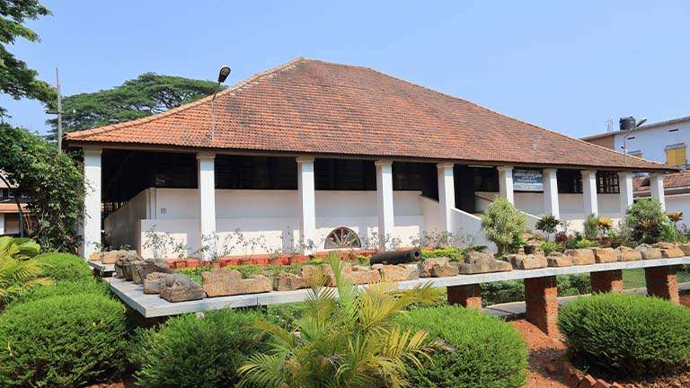

Kozhikode
Kozhikode, also known as Calicut, is an Indian city, second-largest urban agglomeration in the State of Kerala in India and 19th largest in the country with a population of two million according to 2011 census. Kozhikode is classified as a Tier 2 city according to Government of India. During classical antiquity and the Middle Ages, Kozhikode was dubbed the City of Spices for its role as the major trading point of Indian spices. A historical city, it was the capital of an independent kingdom ruled by the Samoothiris (Zamorins) in the Middle Ages. According to data compiled by economics research firm Indicus Analytics in 2009 on residences, earnings and investments, Kozhikode ranked as the second best city in India to reside in.
Kallayi

Kallai is a small town on the banks of Kallai River which links with the Chaliyar river on the south by a man-made canal. It is in the Kozhikode district of Kerala in south India and is noted for timber trading. During the late 19th century early 20th centuries, the Chaliyar River was extensively used as a waterway for carrying timber from the forest areas in and around Nilambur to the various mills in Kallai near Kozhikode (Calicut). Rafts made of logs were taken downstream during the monsoon season to Kallai, where these were sawn to size in the timber mills dotting the banks of the river.
Pazhassi Raja Museum
A veritable treasure trove for historians and connoisseurs of art, the Pazhassi Raja Museum is located in Kozhikode. The Pazhassi Raja Museum & Art Gallery adjacent to the museum displays the acclaimed paintings of Kerala’s cherished artists, Raja Ravi Varma (1848 – 1906) whose works brought international repute to the State and his uncle Raja Raja Varma. The museum is managed by the State Archaeology Department and has on display mural paintings, antique bronzes, ancient coins, models of temples, umbrella stones, dolmenoid cists (quadrangular burial chambers with capstones), and similar megalithic monuments.